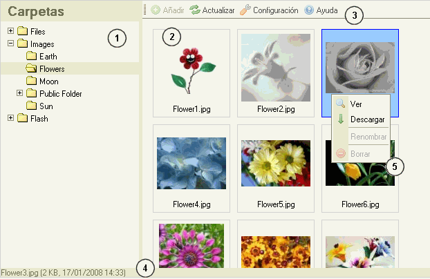

Introducción a la interfaz de CKFinder
La interfaz de CKFinder ha sido diseñada para ser clara, familiar, fácil de aprender y usar para nuestros usuarios finales. La mayoría de las características pueden ser usadas con movimientos del ratón y clicks en menús contextuales.
La siguiente imagen es una captura de pantalla de CKFinder:

- Panel de Carpetas : contiene la "vista de árbol" de las carpetas donde se puede navegar, las carpetas son formas de organizar mejor los ficheros.
- Panel de Ficheros: Muestra los ficheros disponibles en la carpeta seleccionada.
- Barra de Herramientas: Es una serie de botones que pueden ser pulsados para ejecutar rápidamente funciones específicas.
- Barra de Estado : Es un espacio utilizado para mostrar información referente al fichero seleccionado, el número total de ficheros en una carpeta etc...
- Menú contextual: Una serie de opciones que pueden ser usados para ejecutar tareas específicas en el objeto sobre el cual se ha hecho click. Las opciones disponibles cambian dinamicamente dependiendo del tipo del objeto al cual se le hizo click.